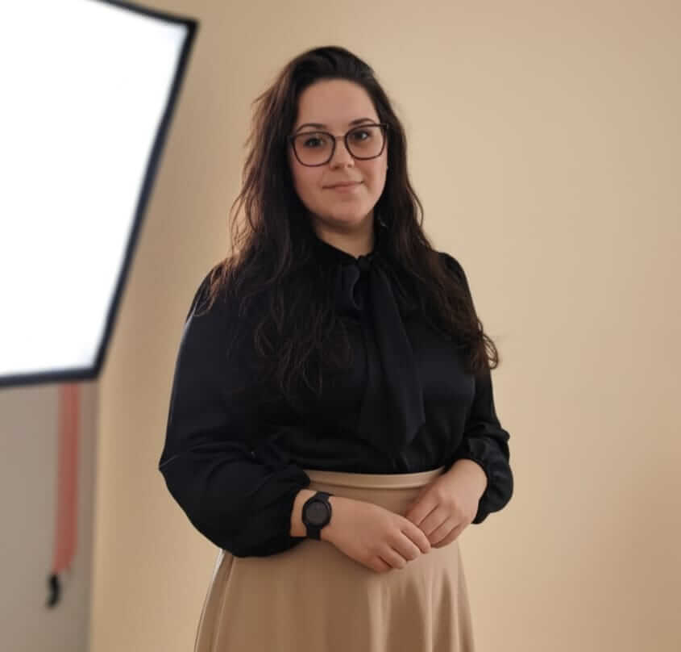

Sobre mim
Olá! Sou Gisele e a minha jornada na área da tecnologia nasceu de uma paixão genuína por tecnologia, ainda criança. Nesse um ano de formação, mergulhei em diferentes linguagens como C++, C#, Python, Cobol, Java, entre outras., Cada uma trazendo novos aprendizados e desafios.
Embora a minha trajetória profissional tenha começado em outra área, encontrei na programação um espaço para unir lógica, criatividade e a busca por soluções inovadoras. Cada projeto que desenvolvo é uma oportunidade de evoluir e transformar ideias em algo concreto.
Tenho grande interesse em desenvolvimento web, bancos de dados e boas práticas de segurança. Gosto de aprender novas tecnologias e estou sempre em busca de melhorar minhas habilidades. Além disso, sou organizada, persistente e acredito que a programação é uma ferramenta poderosa para impactar positivamente o mundo.
Atualmente, procuro uma oportunidade de estágio onde possa aplicar meus conhecimentos, aprender com profissionais experientes e contribuir com dedicação e entusiasmo para projetos reais.
📄 Ver Currículo